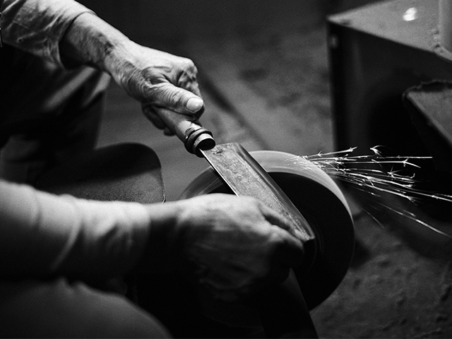

Kein Messer bleibt ewig scharf. Ein geeignetes Schleifmittel und ein regelmäßiger Nachschliff sind zwingend notwendig, um die Schärfe der Klinge zu erhalten. In diesem kleinen Ratgeber möchten wir die Frage beantworten, was Sie zum Messer schärfen brauchen und welche handwerklichen Voraussetzungen Sie mitbringen müssen. Sie erfahren mehr über den richtigen Umgang mit Schleifstein, Wetzstab oder Messerschärfer.
